2019
Visual Narrative, selected fragments. Narración Visual, fragmentos seleccionados.
Sizes varying from 28x19cm to 38x28cm. Tamaños entre 28x19cm y 38x28cm.
Mixed media (oil, pencil, watercolor) on paper. Técnica mixta (óleo, acuarela, lápiz) sobre papel.
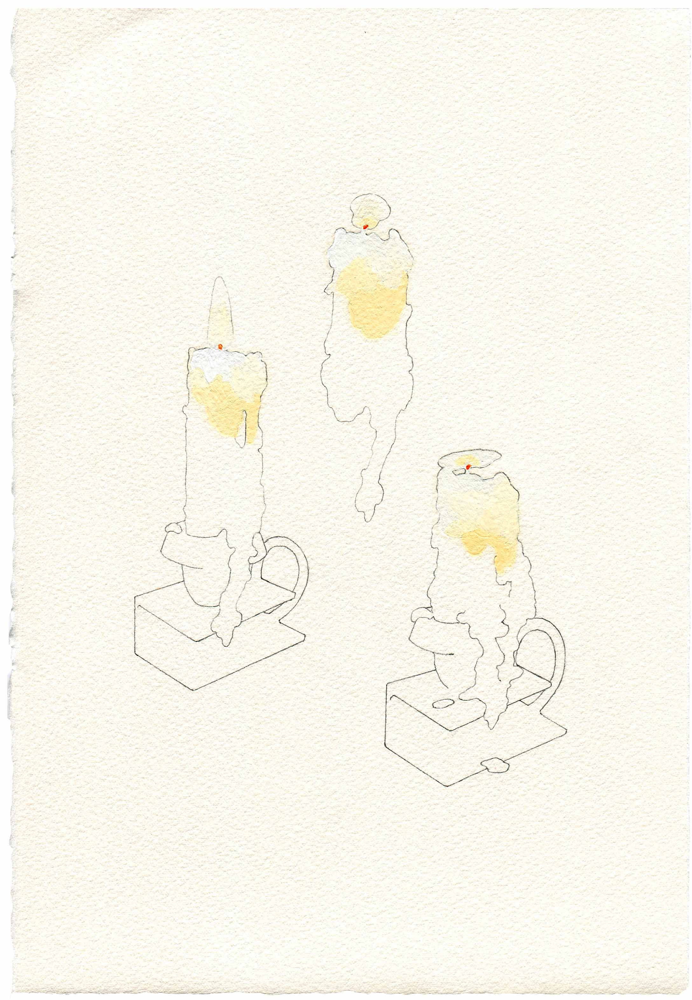
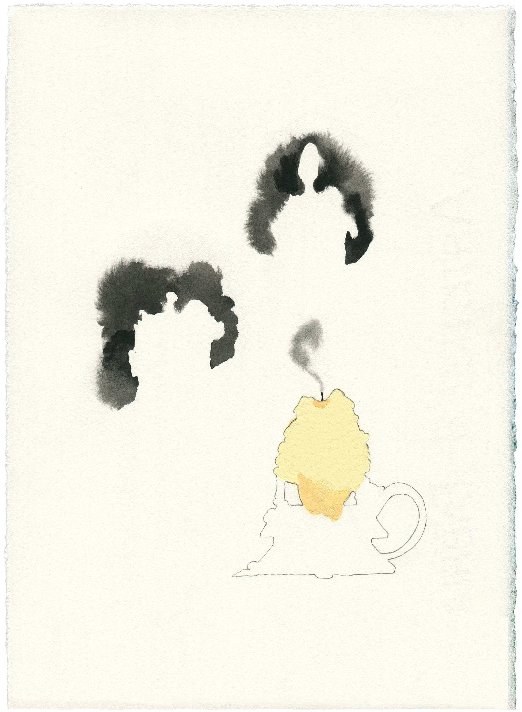
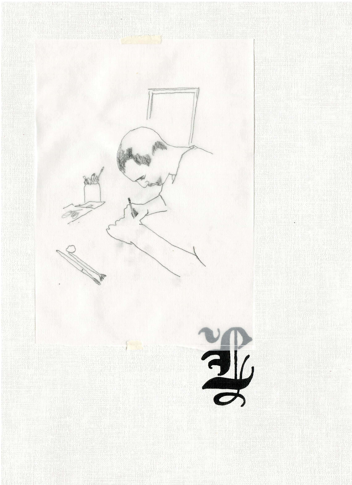
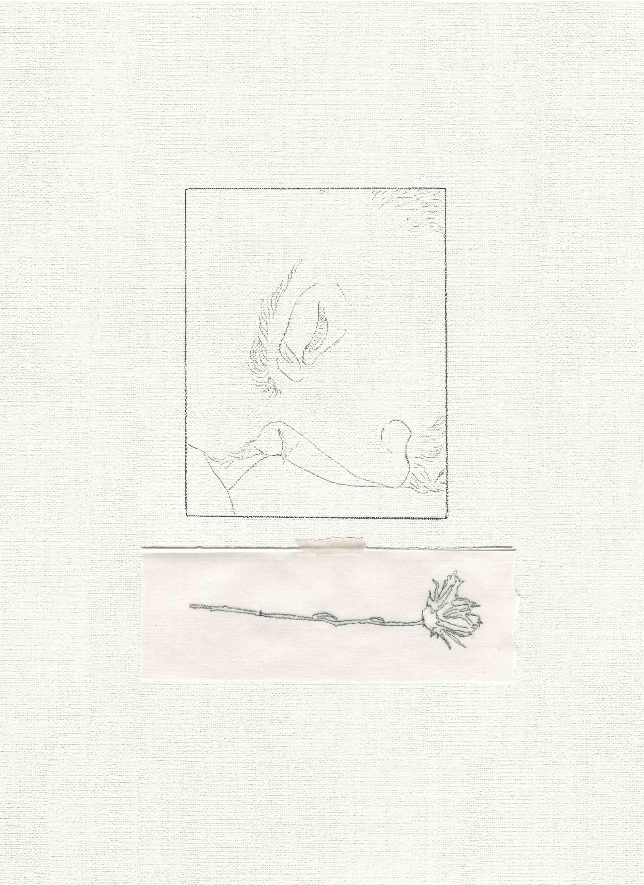
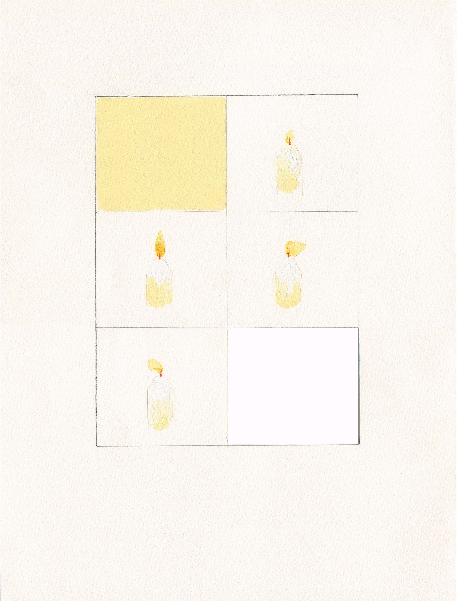
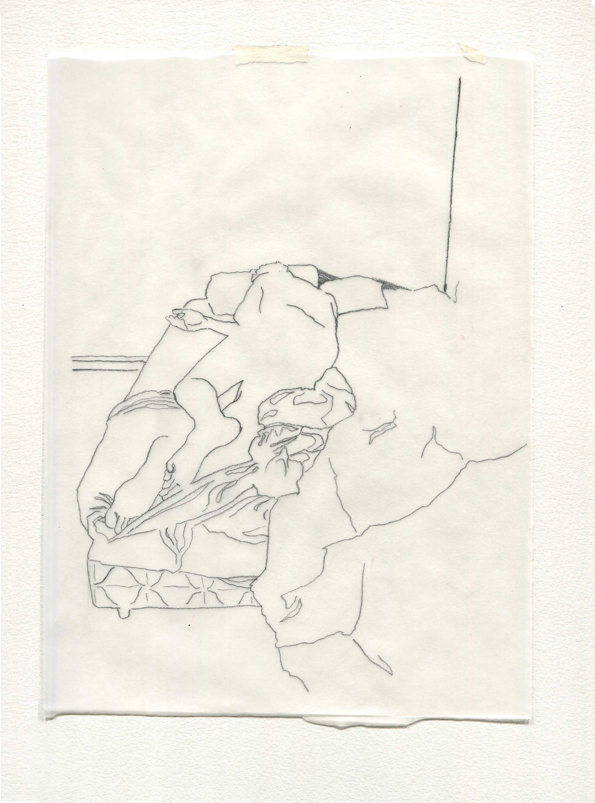
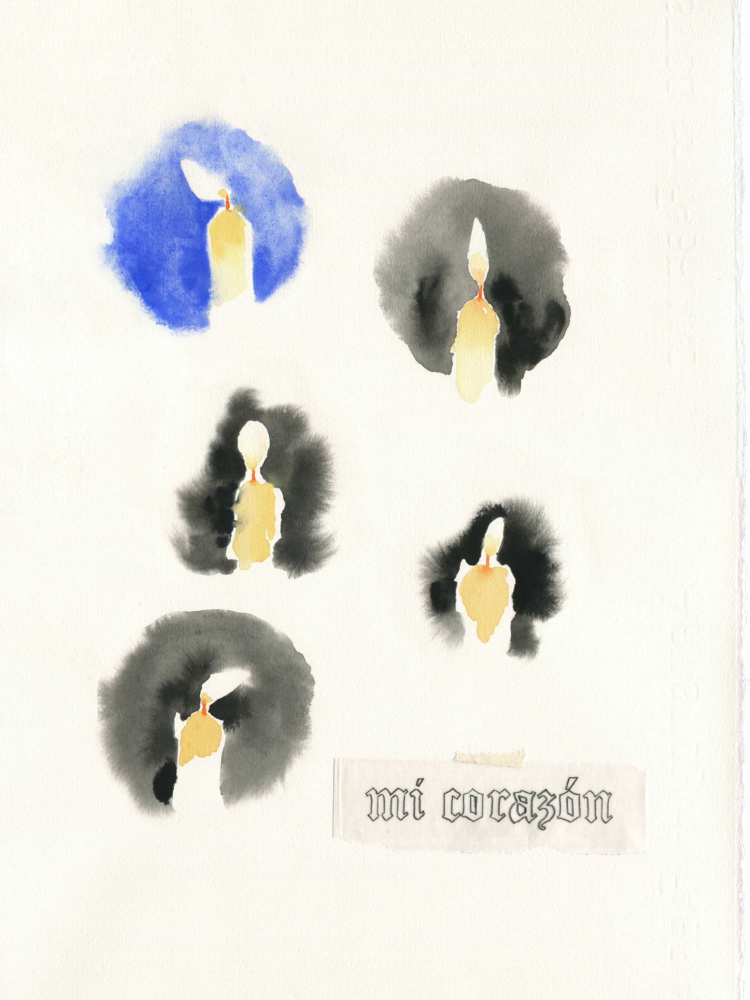
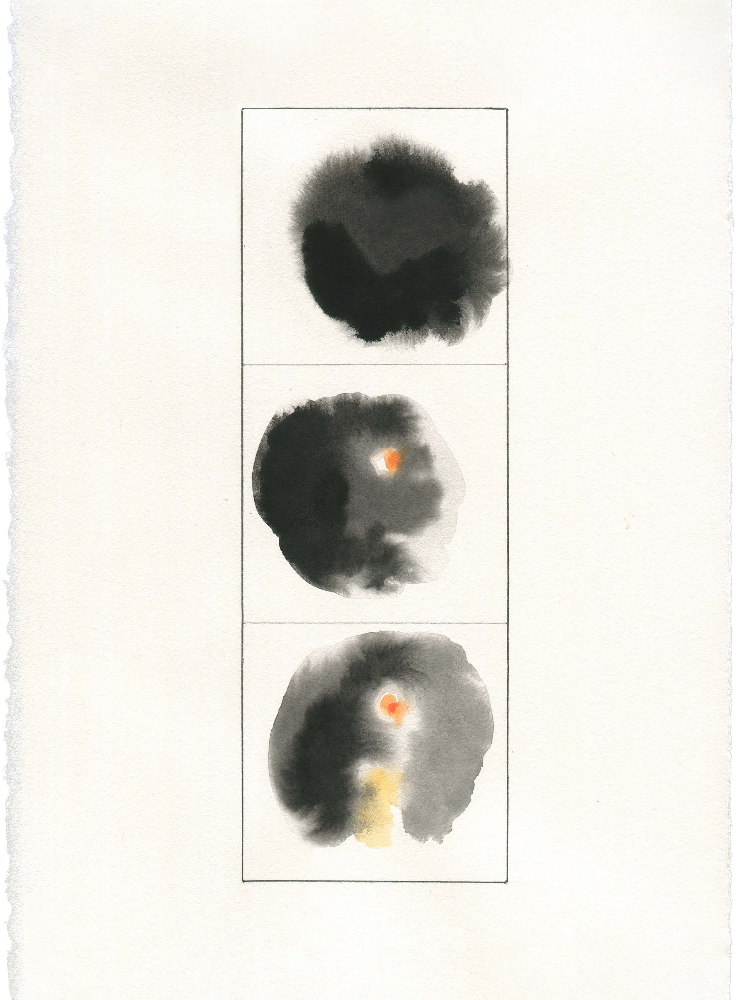

 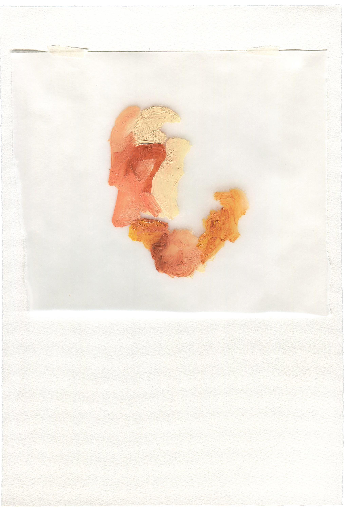
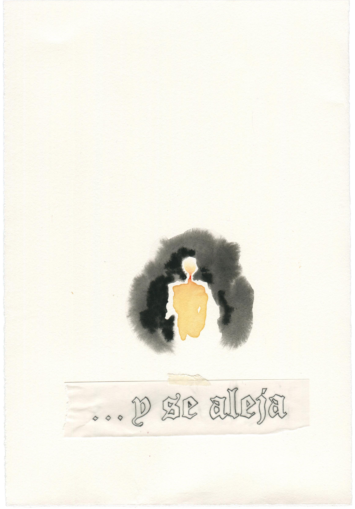
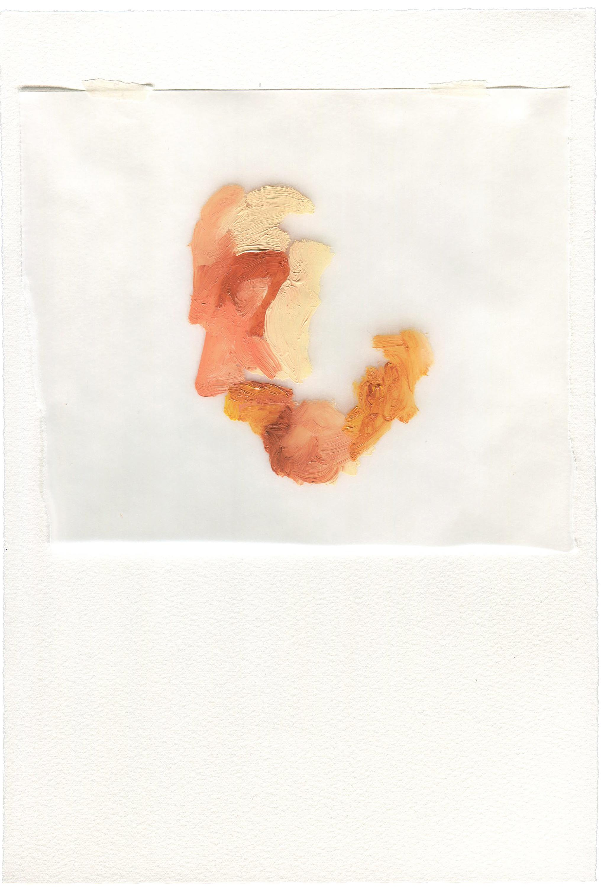
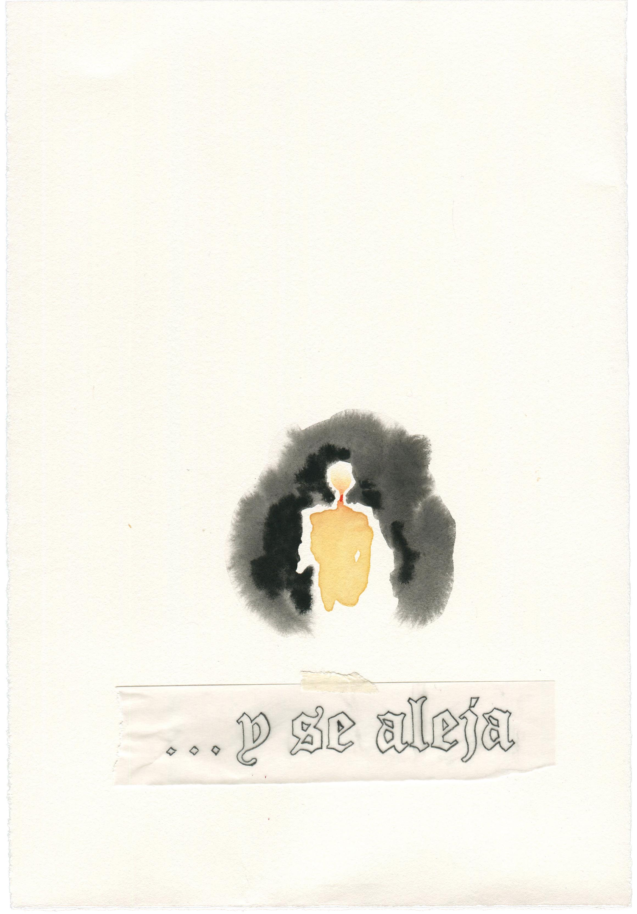
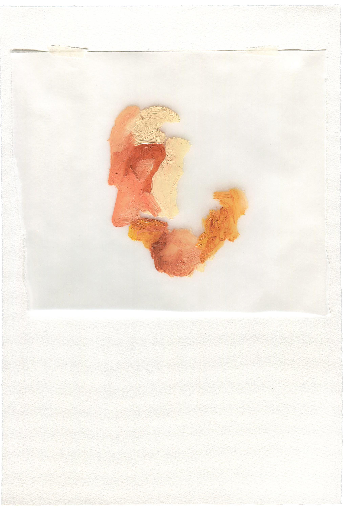
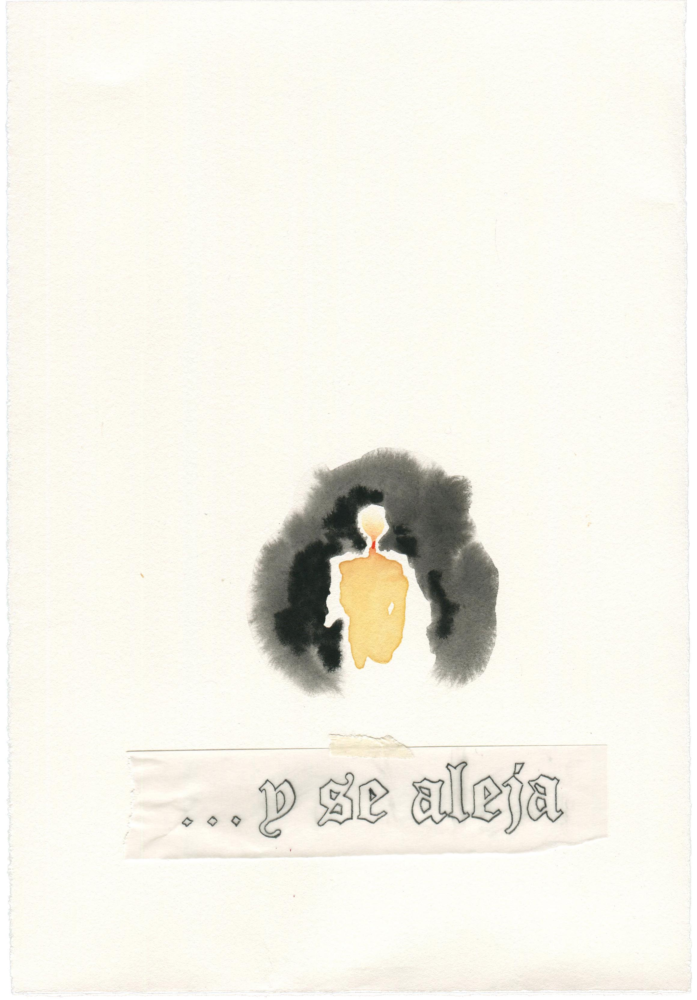